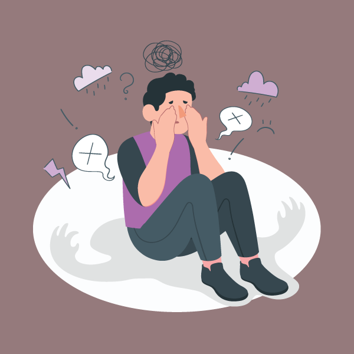

In recent years, social media has become an integral part of daily life for millions of people worldwide. While it offers opportunities for connection, self-expression, and entertainment, growing evidence suggests that social media may also contribute to rising rates of depression and anxiety, particularly among young people. One of the key ways social media can negatively affect mental health is through the constant comparison it encourages. Users often see highly curated posts, portraying idealized versions of others' lives. These depictions, whether they involve material success, physical appearance, or social activities, can create unrealistic standards and lead to feelings of inadequacy or low self-esteem. For individuals who are already vulnerable, this constant comparison can become overwhelming, deepening feelings of loneliness and isolation. Another factor is the addictive nature of social media platforms. The infinite scroll, push notifications, and "likes" system are designed to keep users engaged, sometimes at the cost of their mental well-being. Research has shown that excessive use of social media can lead to increased stress, disrupted sleep patterns, and a decrease in real-life social interactions, which are essential for maintaining emotional balance. The pressure to maintain an online presence and the fear of missing out (FOMO) further contribute to anxiety, as users feel compelled to stay connected at all times, even if it comes at the expense of their mental health. Furthermore, social media can expose users to cyberbullying, harassment, and toxic online environments, all of which can exacerbate feelings of anxiety and depression. The anonymity provided by the internet can lead to harmful behaviors that may not occur in face-to-face interactions, causing significant distress for those on the receiving end. While social media is not inherently harmful, its overuse and the way it is designed can contribute to mental health issues. It is essential to find a healthy balance and be mindful of how social media affects our well-being. As we navigate the digital age, understanding the impact of social media on mental health is crucial in fostering a healthier, more balanced online experience.
